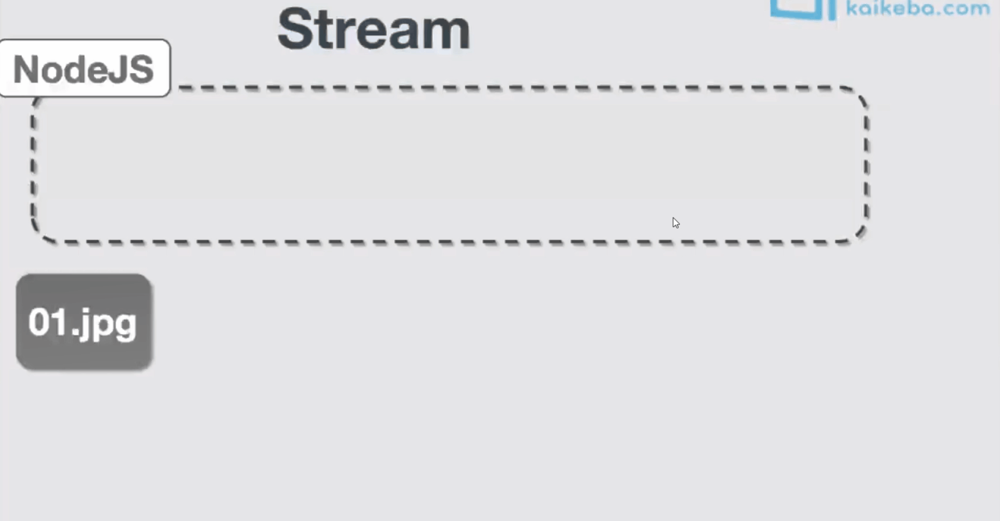

NodeJs
node 基础
node的常用模块
1 | 1.核心模块 global buffer module process |
1 | 1.核心模块 |
1 | //示例 |
下载
1 | 1.用node 第三方包 去下载github 上下载一个东西 第三方包 download-git-repo |
1 | const download = require('download-git-repo') |
进度条
1 | 1. 主要使用node ora模块 需要安装 |
1 | //这样就会又提示的字样了 |
封装模块
1 | 1.我们上面的那个下载已经写好了现在需要封装成函数 然后导出 |
1 | 1.导出的文件模块 base.js |
fs对象
1 | 1.主要是对文件进行相关的操作 |
1 | //文件的读取 |
1 | //异步读取 fs.readFile('路径',(err,data) => {}) |
1 | 几个常用的操作 |
Buffer 对象
1 | 1. Buffer对象是node.js 对二进制数据的一个封装 在node里我们所有的二进制数据读取出来都是Buffer |
1 | const buf1 = Buffer.alloc(10) //分配资源 |
http操作
1 | 1.最简单的创建了一个http的请求服务 当访问localhost:3000的时候 就给你回复 'hellow....' |
1 | 2.通过判断浏览器地址 去读取文件 返回给浏览器文件 |
1 | 3.返回一个接口 |
stream 流
1 | 1.这里我们比如要用node 复制一张图片 逻辑就是要先读取这个图片 然后在写入这个图片 |
1 | 2.stream 就是类似一个流 流的话 就需要有管道 让你的文件 通过管道流入到 你指定的地点 |

1 | 3.我们的网页在访问的时候会有img标签 它也是一个get请求 我们可以用headers.accept 拿到它请求的格式 从而来判断 你这个请求是不是图片的请求 然后来写个流 |
公告
感谢访问本站，如喜欢请收藏。本站主要分享前端知识，立志成为资深前端工程师，但目前是一个前端界的小学生 若喜欢可以打赏请博主喝一杯冰阔落
另外请大家多多支持淼哥的开源项目
https://github.com/flipped-aurora/gin-vue-admin
🌟🌟欢迎大家start 🌟🌟
欢迎加入博主的前端技术交流群